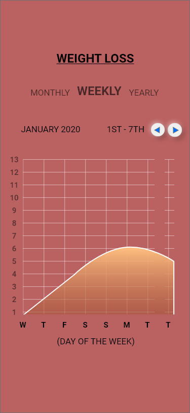

Home
Workouts
Progress
Progress Check!
Use this graph to track your fitness progress over the months/years.

I tried to make an interactive graph using JS but didn't have time to finish :/ So I decided to build a model of what the graph would have looked like using Adobe XD